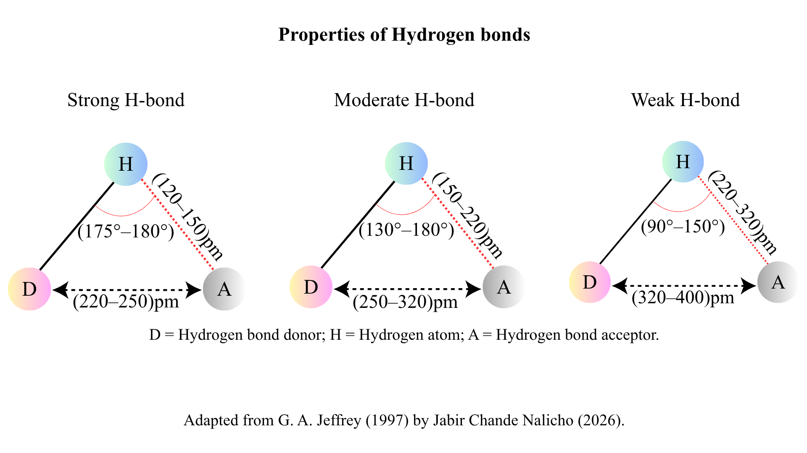

Geometric Criteria and Properties of Hydrogen Bonds
Hydrogen bonding is a donor-acceptor interaction involving hydrogen atoms bound to electronegative donors. Depending on donor-acceptor distances, hydrogen-to-acceptor distances, and interaction angles, hydrogen bonds are categorized into strong, moderate, and weak interactions.

Summary of Geometric Parameters
- Strong H-bond: Mostly covalent; D···A distance: 220–250 pm (2.2–2.5 Å); H···A distance: 120–150 pm (1.2–1.5 Å); Angle: 175°–180°.
- Moderate H-bond: Mostly electrostatic; D···A distance: 250–320 pm (2.5–3.2 Å); H···A distance: 150–220 pm (1.5–2.2 Å); Angle: 130°–180°.
- Weak H-bond: Electrostatic; D···A distance: 320–400 pm (3.2–4.0 Å); H···A distance: 220–320 pm (2.2–3.2 Å); Angle: 90°–150°.
Reference & Attribution
Primary Literature Source:
Jeffrey, George A. An Introduction to Hydrogen Bonding. Oxford University Press, New York, 1997, p. 12 (Table 2.1). ISBN 0-19-509548-0.
Visual Attribution:
Diagram designed and published by Jabir Chande Nalicho (2026).